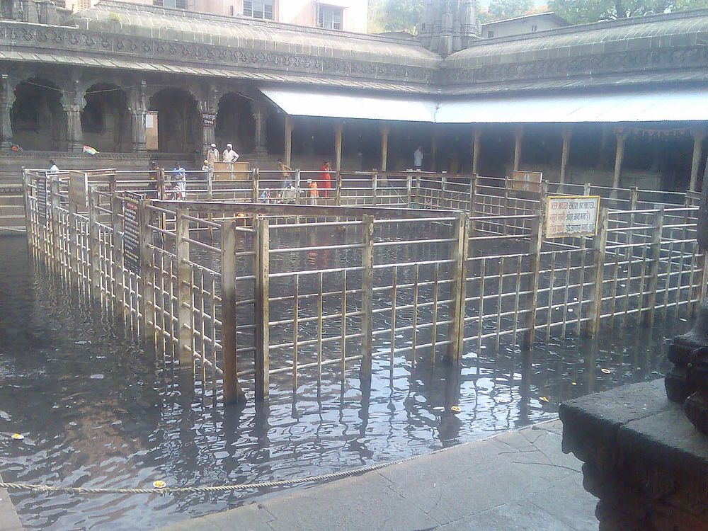
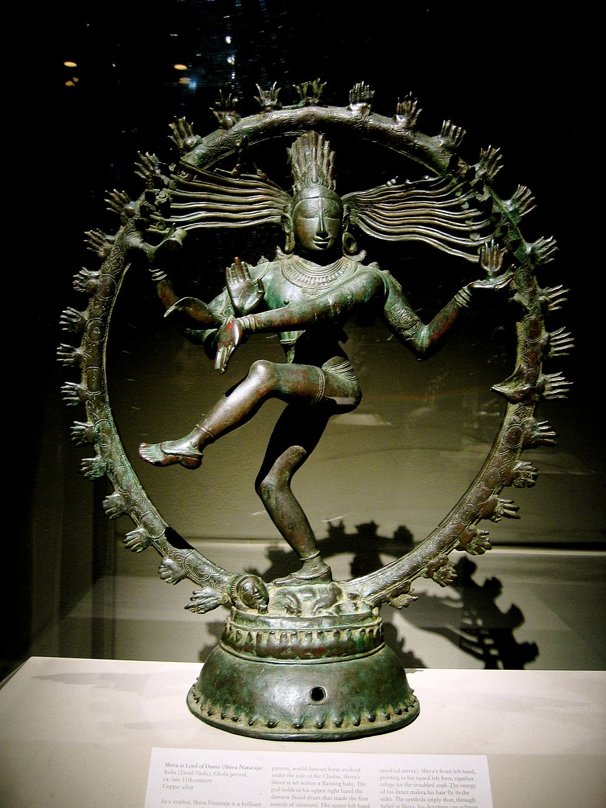
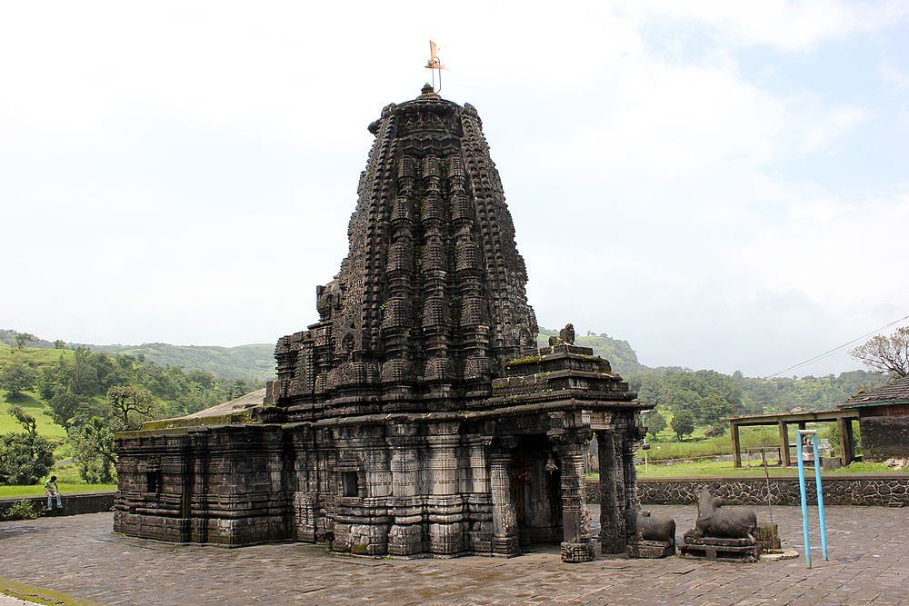

|  |  |  |
"Of Wines and Vineyards" Nashik Tourism Nasik is a religious Hindu city, host to the Kumbh Mela every 12 years. It also makes for a perfect wine tasting destination. Nashik (Nasik), named after a relic associated with Ramayana, is a city in Maharashtra located on the banks of river Godavari. Nashik plays host to the famous Kumbh Mela every 12 years. The city is home to plenty of exotic temples and is known in Hindu mythology as the place where Ravana's sister, Surpanakha, tried to seduce Lord Ram and got her nose cut off by Lakshman in the process. Its religious importance doesn't end there. It also plays host to the thousands of tourists visiting Shirdi and Trimbakeshwar. Apart from its temples, Nashik also has forts, waterfalls and vineyards to look out for. With multiple vineyards present in Nashik, the most popular being Sula, the wine-tourism industry is mushrooming in this part of Maharashtra. Nashik gives you the chance to experience a fabulous cocktail of extremes - from temples to vineyards, hills to waterfalls, this place offers a lot to see.